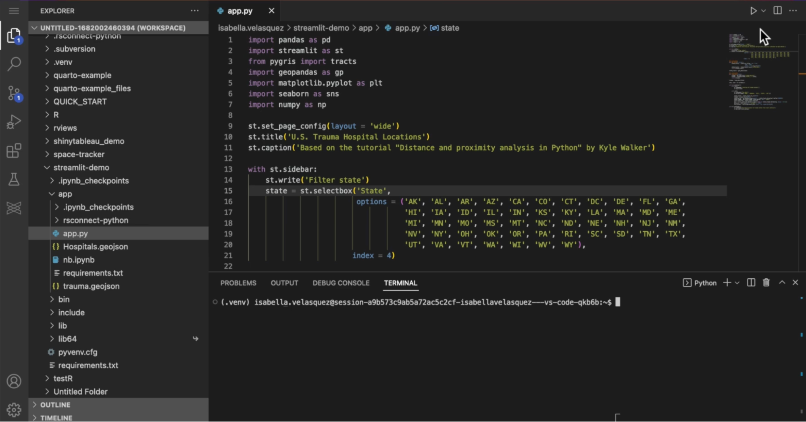
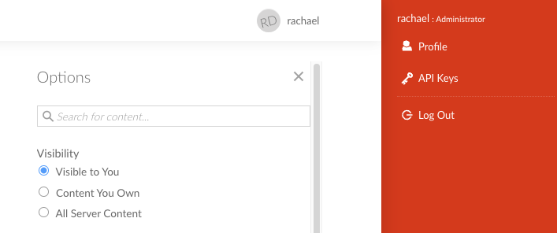
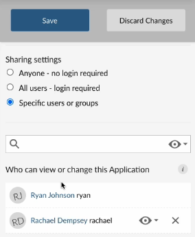

2023-06-14
This is part 5 in our series of blog posts, “What can you do with Posit Connect?”
Posit Connect is a publishing platform for the authenticated sharing of R and Python data products in one convenient place that brings the power of data science to your entire organization. On the last Wednesday of every month, we host a Posit Team demo and Q&A session that is open to all. You can use this link to add the event to your calendar.
Teams lose value, time, and money when data insights cannot be conveyed easily to decision-makers.
With Posit Connect, it’s easy to share Shiny applications, Jupyter Notebooks, Quarto and R Markdown reports, Plumber and Flask APIs, Dash, Bokeh, Voilà, Streamlit applications, Quarto projects, dashboards, plots, and more in one convenient place to bring the power of data science to your entire organization.
This example will walk through publishing a Streamlit app to Posit Connect. Streamlit is a popular open-source framework for creating interactive web applications in Python and can easily be shared with viewers via Posit Connect. In this blog post, we’ll discuss how to publish a Streamlit app written in VS Code on Posit Workbench to Posit Connect.
If you’re curious about the difference between Shiny for Python and Streamlit, you can check that out here too.
For this session, we are deploying a Streamlit app from a VS Code instance in Posit Workbench.
Posit Workbench is the place for teams to collaboratively build open-source data science projects at scale. It supports R and Python, giving data scientists access to all the development environments they love, including RStudio, Jupyter Notebook, JupyterLab, and VS Code. Workbench provides enterprise-friendly features, such as centralized management, security, and commercial support. VS Code is a great all-purpose editor, and it is the IDE you will use today.
First, you’ll need to open a VS Code session within Posit Workbench and create a new directory called streamlit-demo. Next, take all of the code for today’s session (found here) and place it within the newly created streamlit-demo directory.

Open-source data science promotes a collective knowledge source where ideas and solutions are openly shared with other like-minded researchers and data enthusiasts. Often, these ideas are encapsulated within libraries which evolve over time.
It’s usually a good idea to use a virtual environment to install packages for a particular project. Virtual environments are particularly important when deploying an application to Connect because they speed up deployments and ensure that your Python environment can be replicated on the Connect server.
After running these commands you should see your command prompt change to (.venv) and you can [set your python interpreter](https://code.visualstudio.com/docs/python/environments#:~:text=your%20User%20Settings.-,To%20do%20so%2C%20open%20the%20Command%20Palette%20(Ctrl%2BShift,Settings%2C%20with%20the%20appropriate%20interpreter.) in VS Code to activate this environment when you open the project in VS Code.
In Python, it’s common to document the currently used libraries within a file named requirements.txt. To create this document, forward the output of pip freeze to a requirements.txt file by running the following command in your terminal:
pip freeze > requirements.txtIn our streamlit-demo directory, you’ll find such a file with various libraries and their corresponding version numbers listed.
Here are the first 10 lines of our requirements.txt file:
aiofiles==22.1.0
aiohttp==3.8.4
aiosignal==1.3.1
aiosqlite==0.18.0
altair==4.2.2
anyio==3.6.2
appdirs==1.4.4
argon2-cffi==21.3.0
argon2-cffi-bindings==21.2.0
arrow==1.2.3To make sure these libraries are installed, we can run the following command within the Terminal of VS Code. Make sure you are running this command from within the same directory as the requirements.txt file:
pip install -r requirements.txtThe last step is to deploy this application to Posit Connect using the rsconnect-python package. Install it by running:
You will need to create and use an API key to deploy your Streamlit application. This is important because when you deploy to Posit Connect using the rsconnect-python package, Connect needs to know who’s trying to deploy it to make sure you have the necessary credentials and privileges to do so. This is the command you will use to deploy the example Streamlit application with the API key.
rsconnect deploy dash --server https://colorado.posit.co/rsc/ --api-key [api-key-goes-here] ./So where do you find this API key? In your Posit Connect instance, click on your name in the top right-hand corner to see “API Keys.” After clicking on this, you can create a brand new API key that you will copy over to VS Code and paste into the command above.

Remember to always treat your API keys like passwords!
The ./ syntax at the end of the above command tells rsconnect-python to look in our current working directory for an app.py file and publish it Posit Connect. Once you hit ENTER on your keyboard, the rsconnect-python package will validate the Connect server and making sure that the bundle looks good. If anything goes awry, it will print useful messages to help troubleshoot.
But what’s happening as you deploy an application? It captures your environment, including what Python version you are using, what libraries you are using, and what versions of the libraries you are using- and it’s making sure Connect has that available to replicate your environment exactly as it is in VS Code.
You did it. You’ve deployed your Dash application!
Now that your application is hosted on Posit Connect, you can easily share it with others. Most importantly, the viewers of your app don’t need to know anything about Streamlit, Python, or Posit Connect; they can simply treat your application like any other website!
Posit Connect allows you, as the publisher, to tightly control who has access to your Streamlit application. You can provide access to individual users, groups of users, or anyone with access to your Posit Connect instance. Tight control over who can view your application is important, especially if you have any sensitive data.

This example covered publishing a Streamlit application to Posit Connect, but you have many options when it comes to data products that you can deploy to Connect.
We’d love to have you join us at one of our monthly Posit Team Demos, where we walk through a different end-to-end data science workflow each month. They are on the last Wednesday of every month at 11 am ET on YouTube. You can add the event to your calendar here: pos.it/team-demo
If you have any questions and would like to talk with our team, you can schedule a time to chat here.
Interested in learning more about data workflows in Python or R? Join us at posit::conf(2023)! We have an amazing array of workshops and talks lined up. If you found this post interesting, check out these two options: